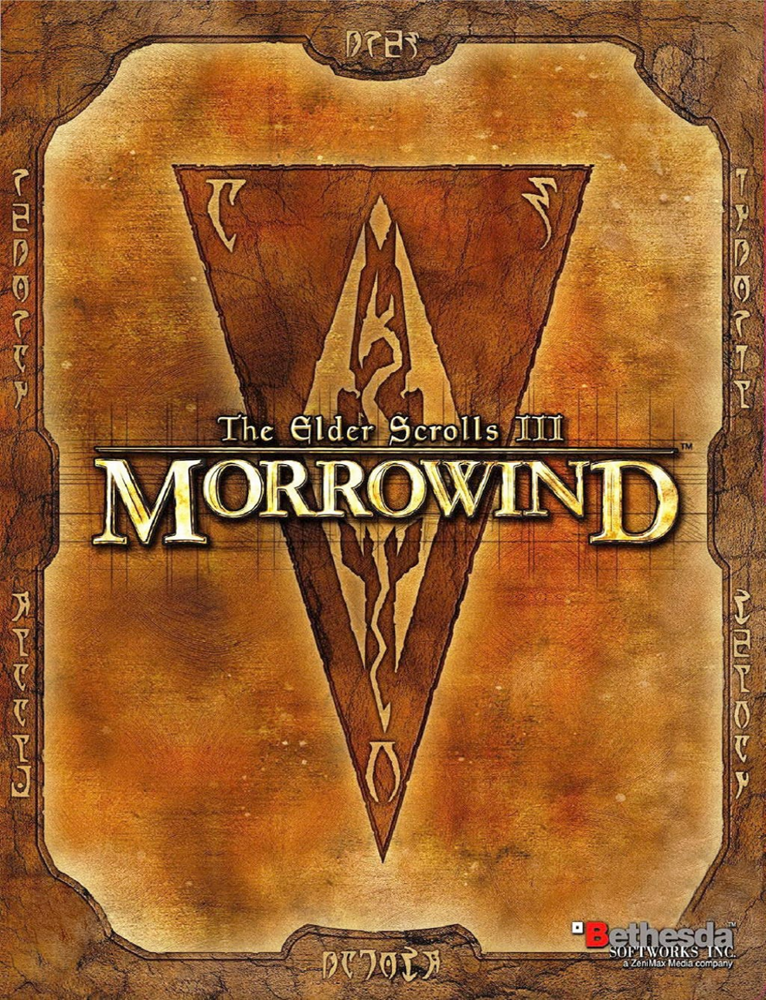
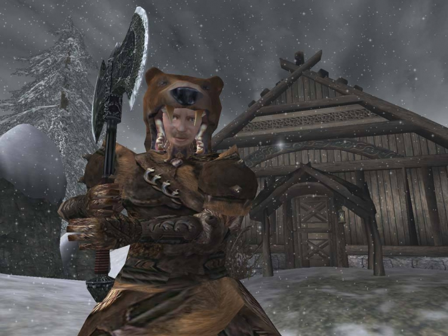
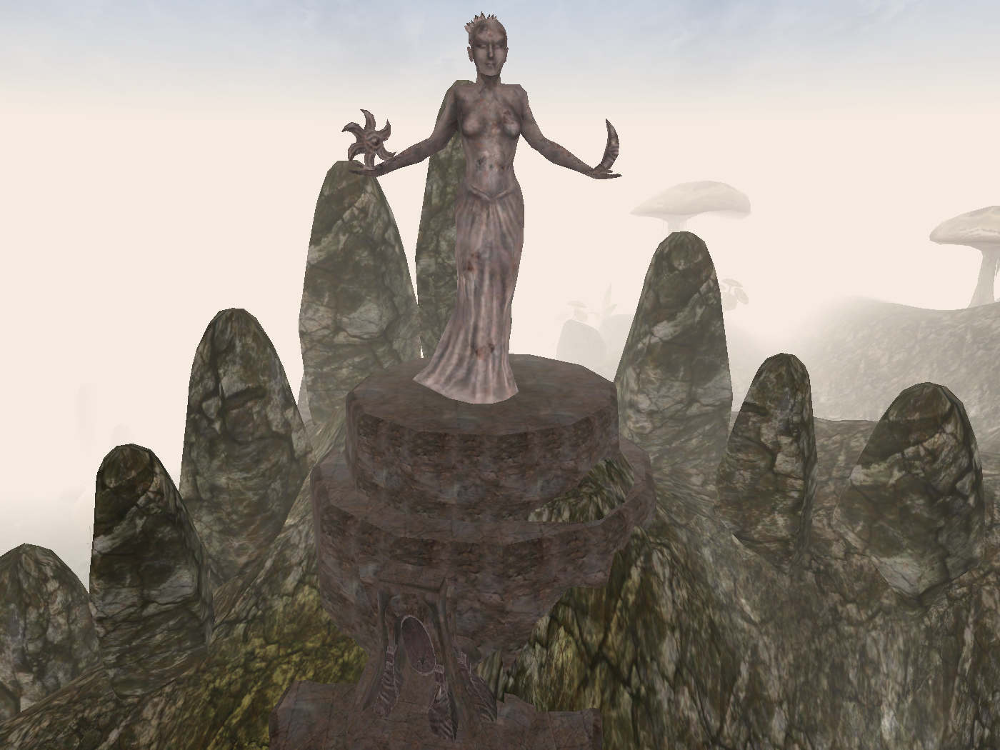
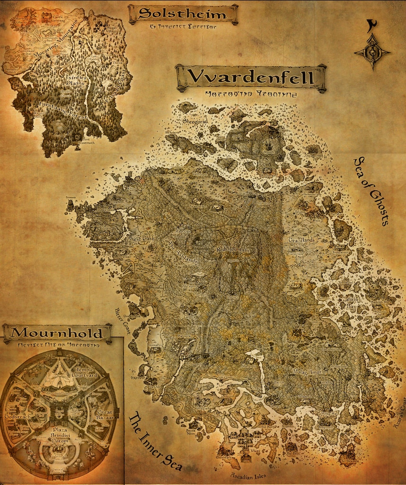
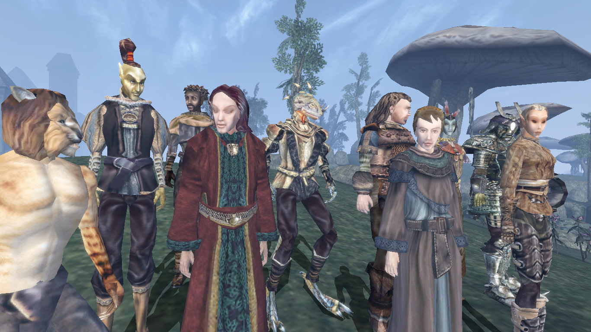
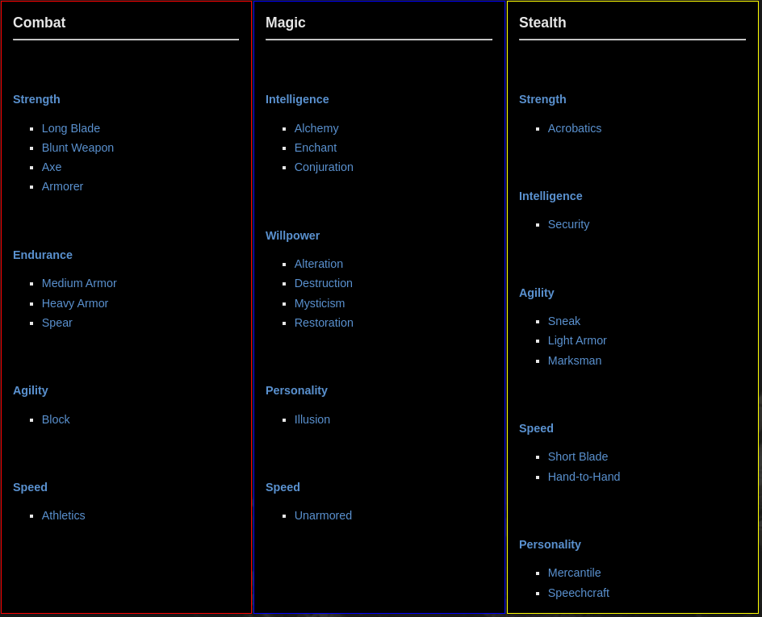

Chapter III: Morrowind
Short summary
The Elder Scrolls III: Morrowind is the third chapter in The Elder Scrolls series of role-playing games (RPG) developed and published by Bethesda Softworks. It is set in and around the province of Morrowind, in particular the island of Vvardenfell. It has two expansion packs, Tribunal (2002) and Bloodmoon (2003). The game was released for PC on May 1, 2002, in North America and May 2, 2002, in Europe.
 Short summary
"In the waning years of the Third Era of Tamriel, a prisoner born on a certain day to uncertain parents was sent under guard, without explanation, to Morrowind, ignorant of the role he was to play in that nation's history..."
In the opening cinematic scene Azura explains to the dreaming Nerevarine that they have been taken from the Imperial City's prison to Morrowind. Azura gives only a reassurance, with no explanation as to why you have been chosen or even for what exactly you've been chosen. As this scene is playing out there are runes scrolling faintly in the background and as Azura finishes speaking one line becomes readable."Many fall, but one remains."
The next voice heard is that of a concerned Dunmer prisoner named Jiub who wakes you from the dream and asks for your name. This is where the character creation begins and the game opens up. Once freed, the game world becomes an incredibly interactive environment filled with opportunities for fun and adventure. Even though the main quest centers on the player being the Nerevarine of prophecy, it is an open-play style role-playing game, meaning you can do what you want and be who you wish. Prowl the streets as a nimble thief picking pockets and fencing ill-gotten treasure, join the Mages Guild and rise to the rank of Arch-Mage, be an assassin stalking targets in the shadows, become a noble member of one of the Great Houses, and even explore "life" as a vampire or a werewolf.
Races in Morrowind
There are ten distinct races that you can choose for your character to be born as. These races are broken up into three different categories: Men, Mer, and Beast Races.
Beast races
Beast Races cannot wear shoes, boots or full helmets; specializing in Heavy Armor is not for them.
These races are Khajiit and Argonians.
Skills
